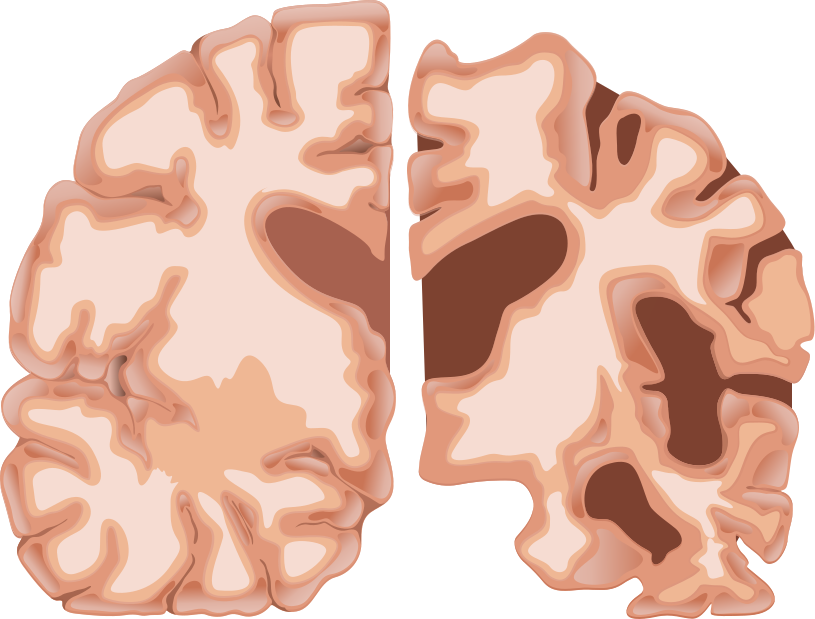
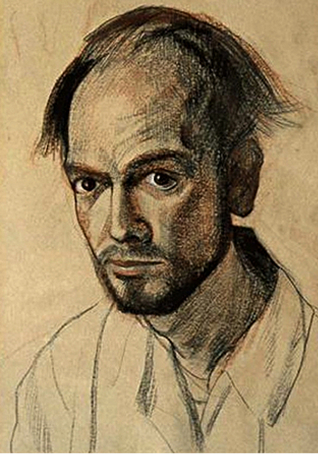
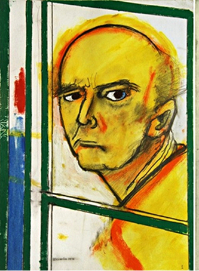
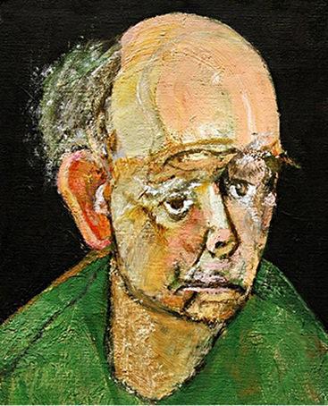
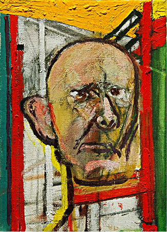
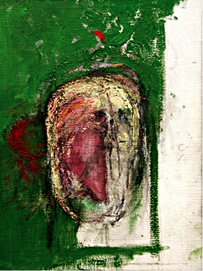
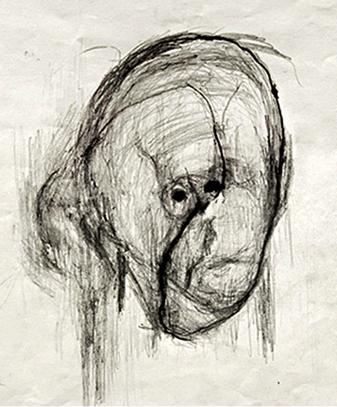

В 1995 году американский художник Уильям Утермолен (William Utermohlen) узнал,
что у него болезнь Альцгеймера
и начал большой проект- серию автопортретов.
Уильям хотел запечатлеть,
как изменяется сознание человека при прогрессирующей деменции

здоровый мозг
болезнь альцгеймера

1967

1996

1997

1998

1999

2000